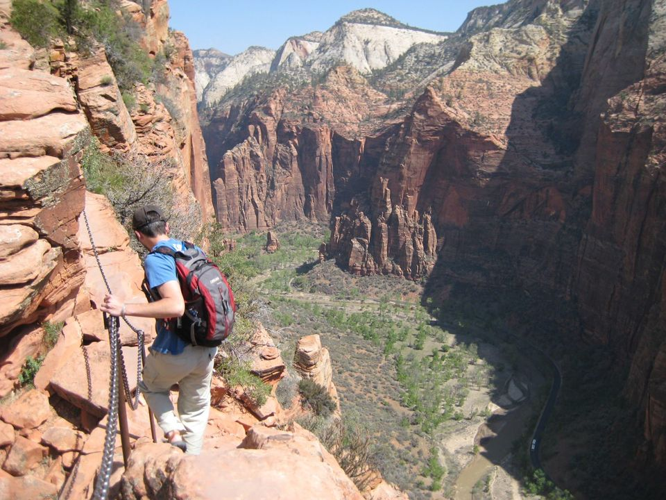

1Angels Landing
The park's signature hike, and one of the most exposed maintained trails in the national park system. The West Rim Trail climbs the canyon wall in paved switchbacks, cools off in Refrigerator Canyon, then stacks 21 tight switchbacks — Walter's Wiggles — to Scout Lookout. From there a half-mile fin runs to the summit along a ridge under three feet wide in places, chains bolted into the rock, drop-offs of up to 1,000 feet.
Distance
4.8 mi round trip
Elevation gain
1,488 ft
Time
4–6 hr
Start / parking
The Grotto (shuttle stop 6)
From our base
≈ 6 mi straight line
Best time: First shuttle at 7:00 am — the switchbacks face the sun and the chains bottleneck by mid-morning
Permit lottery. Required for everyone past Scout Lookout, via recreation.gov only. $6 per application (up to six people) plus $3 per person if awarded. Apply in the seasonal lottery months ahead, or in the day-before lottery — 12:01 a.m. to 3 p.m. MT, results at 4 p.m. MT. Start time is measured at The Grotto. No permit is needed to reach Scout Lookout.
Good to know
- Hike to Scout Lookout without a permit — great view, and you decide about the chains there
- Skip the chains if the rock is wet or icy or the wind is up; there is no easy retreat mid-ridge
- Fill up at The Grotto — no water past it, and restrooms end at Scout Lookout
Season note: Chains and slickrock ice up in winter; the route stays open with a permit, but traction devices matter
Accessibility: Not accessible. Unpaved, rocky, under 3 ft wide in places; not for young children. Pets prohibited